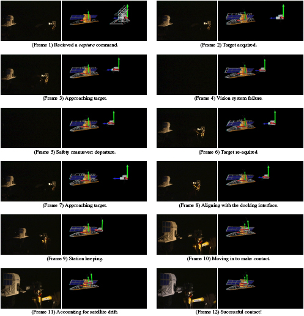

Intelligent Perception and Control for Space Robotics: Autonomous Satellite Rendezvous and Docking
Faisal Z. Qureshi and Demetri Terzopoulos
CoCo in Action
The videos show how CoCo exhibited robust completion of goal in spite of repeated induced 'failures', showing the CoCo-controlled robotic arm capturing a free-flying satellite. The capture procedure is initiated by a single high-level command from the ground station. Upon receiving the command, the system initializes the long-range vision module to commence a visual search procedure. Once the satellite is found, and its identity confirmed, the systems guides the robotic arm to move closer to the satellite. The performance of the long-range vision module deteriorates as the separation between the robotic arm and the satellite becomes smaller; this is due to the fact that the cameras are mounted on top of the end-effector. The cognitive vision system, therefore, turns on the medium range vision module. The long-range vision processing is turned off (to conserve the power consumption) once the medium range system is fully initialized and is "reliably" tracking the satellite. At this stage the robotic is arm tries to match satellite's linear and angular velocities, a procedure known is station keeping. Short-range vision processing is initiated, and a message is sent to the ground station to turn off the satellite's attitude control system. The robotic arm should not capture a satellite whose attitude control system is functioning, as that might destroy the satellite, or the robotic arm, or both. When the attitude control system is not active, the satellite begins to drift; however, the robotic arm still follows it by relying upon the short-range vision system. Upon receiving a confirmation from the ground station that the attitude control system is off, the robotic arm goes in for the kill.
When there is an error, such as a vision system failure, the reactive system responds immediately and tries to increase its separation from the satellite. In the absence any new perceptual information, the system relies upon its time-aware and context-sensitive mental state. Meanwhile, the deliberation module is using its knowledge base to 1) explain the error and 2) suggest a recovery.
In the videos below, the inlay shows the view from Autonomous Agent Design & Simulation Testbed---a software framework for designing cognitive vision systems. The wireframe represents the position of the satellite as estimated by the robotic arm. Notice, the estimated position of the satellite is more accurate when the satellite is closer to the robotic arm. Furthermore, the estimated position is maintained when no new perceptual information is available.
- Video 1 (Handling vision failure)
- Video 2 (Handling vision failure)
- Video 3
- Virtual satellite capture
Background
The work presented here was done as part of the ROSA (Remote Operation with Supervised Autonomy) project at MacDonald Dettwiler Space and Advanced Robotics Limited (then called MDRobotics, now MDA Corporation). MDRobotics is a Canadian company that specializes in space missions, and that has been supporting human space flight since early 1980s through advanced robotic systems, such as Space Shuttle's Canadarm and Mobile Servicing System for the International Space Station. Other partners included National Research Council of Canada--Institute for Information Technology (NRC-IIT), and Canadian Space Agency (CSA), and the University of Toronto and Saikl technologies (through MDRobotics). The project was funded in part by Precarn Inc.
On-orbit satellite servicing
On-orbit satellite servicing is the task of maintaining and repairing a satellite in orbit.
- It extends the operational life of the satellite
- Mitigates technical risks
- Reduces on-orbit losses
- Helps manage orbital debris
As early as the 1980s, the National Aeronautics and Space Administration realized the importance of on-orbit servicing for protecting their assets in space.
The Need for Autonomy
Currently, on-orbit satellite servicing operations are carried out manually; i.e., by an astronaut. However, manned missions are usually very costly and there are human safety concerns. Furthermore, it is currently impracticable to carry out manned on-orbit servicing missions for satellites in geosynchronous equatorial orbit (GEO), as the space shuttle can not reach them. Unmanned, tele-operated, ground-controlled missions are infeasible due to communications delays, intermittence, and limited bandwidth between the ground and the servicer. A viable alternative is to develop the capability of autonomous on-orbit satellite servicing.
Autonomy entails that the on-board controller be capable of estimating and tracking the pose (position and orientation) of the target satellite and guiding the robotic manipulator as it 1) approaches the
satellite, 2) maneuvers itself to get into docking position, and 3) docks with the satellite. The controller should also be able to handle anomalous situations, which might arise during an AR&D operation, without jeopardizing its own safety or that of the satellite.
Solution: Cognitive Controller (CoCo) Architecture
We proposed CoCo architecture that combines an ethologically-inspired, reactive module with a deliberative unit to automatically capture a non-cooperative, free-flying satellite using only computer vision.
- Autonomous satellite capture controller developed in ROSA is the first of its kind. Other satellite capture controllers typically require other sensing modalities, such as GPS, radar, and laser range finders, and assume a cooperative target satellite.
- Besides, to the best of our knowledge, it is the only satellite capture controller capable of deliberative activity to resolve anomalous situations. Rosa is a large research effort and it uses target satellite pose estimation and servo routines developed by other partners.
Success Stories
Rosa helped Boeing win the 12 million dollars Orbital Express contract!
- News Item: MDA Supports Boeing Team in Contract Win to Demonstrate Satellite Repair in Space (http://www.mdacorporation.com/news/pr/pr2002051301.html)
Other related links are
About the CoCo satellite capture controller, says Ross Gillette, ROSA Project Leader, "It was just plain stubborn!"
Publications
For technical details please look at the following publications
- Intelligent Perception and Control for Space Robotics: Autonomous Satellite Rendezvous and Docking, in Journal of Machine Vision Applications, vol. 19, iss. 3, pp. 141-161, 2008, with D. Terzopoulos [pdf]
We have also applied CoCo to a somewhat related problem of space-bourne visual monitoring
- A Computer Vision System for Spacebourne Safety Monitoring in Proc. 8th International Symposium on Artificial Intelligence, Robotics and Automation in Space, September, 2005, Munich, Germany with D. Macrini, D. Chung, J. Maclean, S. Dickinson, and P. Jasiobedzki [pdf]
Stills
In the following figure despite a simulated vision system failure, the servicer robot captures the satellite using vision by making use of its cognitive abilities. On the right of each frame, we show the view from the simulation environment that runs the controller code. The simulation environment communicates with the physical robots over the network. Here, the wireframe represents the position of the satellite as estimated by the robotic arm. The 3D model of the satellite represents the actual position of the satellite according to the sensors on the Fanuc robot arm. The gray cylinder represents the position of the chaser robot end-effector according to the telemetry information. Note that the estimated position is maintained in the absence new perceptual information (Frame 3 and 4). A vision failure was induced by shutting off the ambient light.
